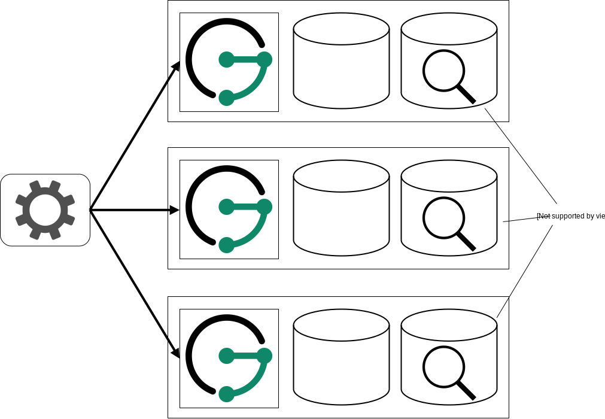
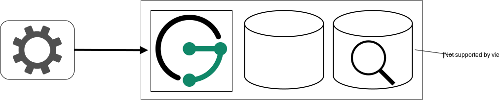

Deployment Scenarios
JanusGraph offers a wide choice of storage and index backends which results in great flexibility of how it can be deployed. This chapter presents a few possible deployment scenarios to help with the complexity that comes with this flexibility.
Before discussing the different deployment scenarios, it is important to understand the roles of JanusGraph itself and that of the backends. First of all, applications only communicate directly with JanusGraph, mostly by sending Gremlin traversals for execution. JanusGraph then communicates with the configured backends to execute the received traversal. When JanusGraph is used in the form of JanusGraph Server, then there is nothing like a master JanusGraph Server. Applications can therefore connect to any JanusGraph Server instance. They can also use a load-balancer to schedule requests to the different instances. The JanusGraph Server instances themselves don’t communicate to each other directly which makes it easy to scale them when the need arises to process more traversals.
Note
The scenarios presented in this chapter are only examples of how JanusGraph can be deployed. Each deployment needs to take into account the concrete use cases and production needs.
Getting Started Scenario
This scenario is the scenario most users probably want to choose when they are just getting started with JanusGraph. It offers scalability and fault tolerance with a minimum number of servers required. JanusGraph Server runs together with an instance of the storage backend and optionally also an instance of the index backend on every server.

A setup like this can be extended by simply adding more servers of the same kind or by moving one of the components onto dedicated servers. The latter describes a growth path to transform the deployment into the Advanced Scenario.
Any of the scalable storage backends can be used with this scenario. Note however that for Scylla some configuration is required when it is hosted co-located with other services like in this scenario. When an index backend should be used in this scenario then it also needs to be one that is scalable.
Advanced Scenario
The advanced scenario is an evolution of the Getting Started Scenario. Instead of hosting the JanusGraph Server instances together with the storage backend and optionally also the index backend, they are now separated on different servers. The advantage of hosting the different components (JanusGraph Server, storage/index backend) on different servers is that they can be scaled and managed independently of each other. This offers a higher flexibility at the cost of having to maintain more servers.

Since this scenario offers independent scalability of the different components, it of course makes most sense to also use scalable backends.
Minimalist Scenario
It is also possible to host JanusGraph Server together with the backend(s) on just one server. This is especially attractive for testing purposes or for example when JanusGraph just supports a single application which can then also run on the same server.

Opposed to the previous scenarios, it makes most sense to use backends for this scenario that are not scalable. The in-memory backend can be used for testing purposes or Berkeley DB for production and Lucene as the optional index backend.
Embedded JanusGraph
Instead of connecting to the JanusGraph Server from an application it is also possible to embed JanusGraph as a library inside a JVM based application. While this reduces the administrative overhead, it makes it impossible to scale JanusGraph independently of the application. Embedded JanusGraph can be deployed as a variation of any of the other scenarios. JanusGraph just moves from the server(s) directly into the application as its now just used as a library instead of an independent service.